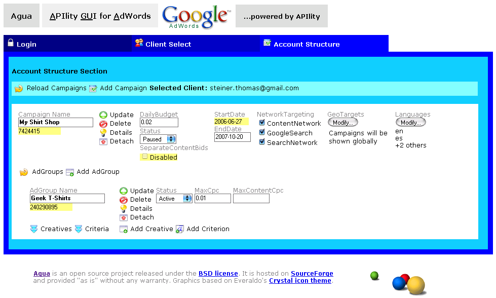
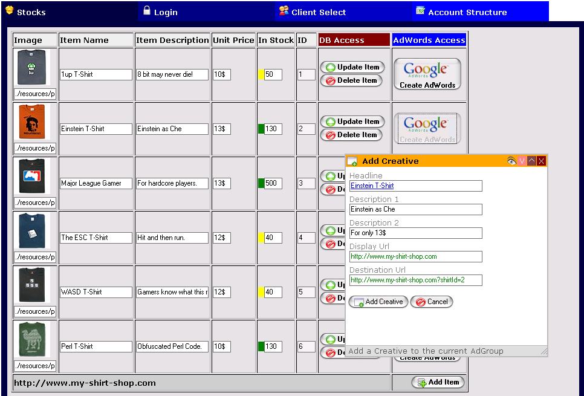
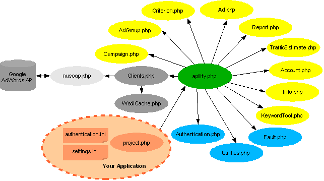
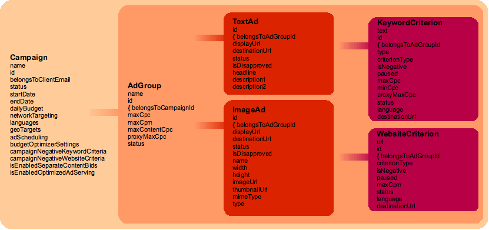

|
The APIlity PHP Library provides an object-oriented way to easily
access and manage the Google AdWords API from within PHP.
This comes along with an abstraction from the SOAP and WSDL details.
Some words about the AdWords API With the AdWords API you can not only manage and organize your accounts more efficiently, easily and smoothly, but also more creatively. Using the API, you can create your own report-pulling software, synchronize your bids with your warehousing or have your own mass uploading tool control your accounts. Web ServicesAll these tasks can be focused programmatically through web services where clients can be invoked, perform the required tasks on the remote server and return the results. Getting started with web service is a bit challenging and may be even discouraging as there are a lot of things to be taken into account that application developers have not usually come across. So we decided to offer client libraries like APIlity that provide an abstraction of these web service details and cover them in high-level language constructs. See APIlity in action  Agua is an Ajax GUI for AdWords and lets you experience AdWords in a revolutionary new way. Agua Biz is a business mash-up of Google Checkout and AdWords which allows you to see how these two services can be integrated in one single Ajax application. Download the two open source projects now: APIlity Agua and APIlity Agua Biz - Ajax GUI for AdWords (Agua) |
Sections of this DocumentIntroduction to APIlityAPIlity Class Organigram  The Role of IDs APIlity Object Hierarchy  Requirements Getting Started Authentication and Context Switching Error Management Error Management Strategy Defensive and Straight-Forward Programming Error Message Styles Fault Stack Settings Sandbox API Versioning Exchange Rate Campaign Negative Criteria Campaign isEnabledOptimizedAdServing Attribute Silence Stealth Mode WSDL Caching APIlity Object-Oriented Quota Usage in APIlity Debugging |
Introduction to APIlity
The APIlity client library provides an object-oriented and easy-to-use way to access the Google AdWords API from within PHP. This helps programmers to concentrate on sophisticated programs and tools, not on complex API details.
The Role of IDs
When using the API, you need to think in IDs. Everything in the AdWords world has an ID which represents its only point of access. To get all Keywords for an AdGroup you first need to know the Campaign in which the AdGroup concerned resides. When you have found the correct Campaign, you need to remember its ID. Then you need to know what AdGroups this Campaign contains and among these find the ID of the one you are searching for. Now with these two IDs, the one for the AdGroup concerned and the one for the Campaign concerned, you are ready to get a list of all Keywords which in turn - yes, you guessed it - are equipped with IDs.
The APIlity Library tries to give the programmer a more intuitive, object-oriented user interface. Once an object has been created, all known actions can be easily performed directly on it, for instance the status of an AdGroup object can be changed via the following instruction:
$someAdGroupObject->setStatus("Paused");
What happens in the background is that the AdGroup client is invoked, establishes a connection to the Google AdWords server, updates the AdGroup's status and closes the connection. All this is hidden from the programmer. All he gets in touch with is high-level PHP objects.
Requirements
APIlity works both with PHP4 and PHP5 and usually only requires the cURL extension to be installed. This can be done very easily by uncommenting the line
; extension=php_curl.dll
in your php.ini file, i.e. remove the semicolon at the beginning of the line. If you are using PHP4, you additionally need to enable the DOM/XML by uncommenting the line
; extension=php_domxml.dll
In case where one of the extensions is not installed APIlity will write a warning to the screen. cURL is needed in PHP4 and PHP5 for downloading reports. DOM/XML is needed in PHP4 to modify the XML reports.
If you can life fine without these features you can just ignore the warnings.Getting Started
APIlity is designed along Larry Wall's credo "Easy things should be easy and hard things should be possible". So getting started is extremely simple and consists of two steps:
- edit authentication.ini and enter your data according to your API account settings
- include apility.php in your project by
require_once('apility.php');
Possible security issue: Please make sure that authentication.ini is not in a web-readable folder of your web server.
The most secure way to make sure no one can steal your account login data is to provide the login data directly. Therefore, after including APIlity into your project file, set the authentication context manually as shown below:
include('apility');
$apilityUser = new APIlityUser(
'email@isp.tld',
'p455woRd',
'clientEmail@isp.tld',
'D3v3Lop3rT0keN',
'4pPlicaTi0nTok3n');
This means leaving authentication.ini untouched.
Authentication and Context Switching
After importing APIlity, the SOAP clients are automatically created and have their headers set according to the values given in authentication.ini. You can overwrite (or later change) this information by modifying the authentication context. This can be done by accessing the standard authentication context, which exists by default after the import of APIlity.
$apilityUser = new APIlityUser();
$apilityUser->setClientEmail("yourClientsEmail@someISP.tld");
or by setting a completely new authentication context
$apilityUser = new APIlityUser(); $authentication = array(); $authentication['Client_Email'] = 'clientEmail@isp.tld'; $authentication['Email'] = 'email@isp.tld'; $authentication['Password'] = 'S3cretP455woRd'; $authentication['Developer_Token'] = 'D3v3Lop3rT0keN'; $authentication['Application_Token'] = '4pPlicaTi0nTok3n'; $apilityUser->setContext($authentication);
This new authentication context is then automatically passed to the SOAP clients which update their headers. This design is very flexible and gives you the opportunity to manage several clients in one loop in only one script - and this for even more than one MyClientCenter managers.
Error Management
Errors happen. Every programmer would subscribe to this, however, when a remote Web service gets involved, good error management becomes even more important.Error Management Strategy
APIlity allows both: straight-forward coding and defensive programming. The convention for the behavior of all functions is:- return false if something went wrong on the SOAP level
- return null if something went wrong on the non-SOAP level (i.e. request for non-existing objects)
- if everything went well
- return the object when there is something to return
- return true when there is nothing to return
Defensive and Straight-Forward Programming
There are two possibilities to code: defensive programming and straight-forward coding. Straight-forward coding is a bit faster, whereas defensive programming takes a bit longer, however is more reliable.
// defensive programming
if ( !$campaignObject = addCampaign(...) ) {
// treat the error
}
print_r($campaignObject);
// straight-forward coding
$campaignObject = addCampaign(...);
print_r($campaignObject);
Fault Stack
All errors are pushed on the fault stack. This behavior is very flexible as the fault stack stores faults in a generic fault object format and therefore allows just-in-time conversion of these fault objects to HTML, plaintext, XML error messages; or nothing at all, just to the needs of the developer. Usually all errors are printed as they occur. However it is possible to access the fault stack manually:$fault = array_pop($apilityUser->getFaultStack()); $fault->printFault(); // prints the last fault in the format given in settings.iniThe maximum size of the fault stack can be adjusted in Fault.php:
define("FAULT_STACK_SIZE", 10);
Error Message Styles
- First, you can just output errors in HTML which is easily readable but relatively useless for creating an error log file.
Display_Error_Style = HTML
Example HTML error message:
Ouch! I am not proud to announce the following AdWords API Error:
Message: An internal error has occurred. Please retry your request.
Trigger:
Code: 0
Fault Origin: /apility/project.php:getManagersClientAccounts()
SOAP Parameters:
<getClientAccounts></getClientAccounts> - Second, you can print fault objects as visible plaintext.
Thus creating an error log file is possible.
Display_Error_Style = Plaintext
Example plaintext error message:
Code: 0
Message: An internal error has occurred. Please retry your request.
Trigger:
Errors:
Fault Origin: /apility/project.php:getManagersClientAccounts()
SOAP Parameters:
- Third, fault objects can be printed in XML format. This is useful when the error message needs
to be parsed or processed otherwise.
Display_Error_Style = XML
<adWordsApiError>
<code>0</code>
<message>An internal error has occurred. Please retry your request.</message>
<trigger></trigger>
<faultOrigin>/apility/project.php:getManagersClientAccounts()</faultOrigin>
<soapParameters>
<getClientAccounts></getClientAccounts>
</soapParameters>
</adWordsApiError>
Settings
All settings concerning APIlity's behaviour can be adjusted in the file settings.ini.
Sandbox
The AdWords API Sandbox is an environment that replicates the API of the live site for developing, testing and debugging applications that use the AdWords API. There is no quota on the Sandbox system, users are free to make all the calls they want. In order to enable the sandbox, change the corresponding variable in the settings:
; Use_Sandbox = no Use_Sandbox = yes
When the sandbox is used, a currency code must be specified for the accounts. Once set, it cannot be changed. If you attempt to change it, the change is ignored.
Currency_For_Sandbox = USD ; Currency_For_Sandbox = EUR
The first time you log in to the sandbox a set of five clients is automatically created. The best way to make sure this went well is to use the following code snippet for the first sandbox call:
print_r(getManagersClientAccounts());This should print a list of five clients with the prefix client_#, where # is a number from 1 to 5. The complete client name is client_#+yourEmail@someISP.tld. Use this value for the authentication.ini:
Client_Email = "client_#+yourEmail@someISP.tld"
API Versioning
APIlity is a library to access the AdWords API. When using APIlity, programmers usually do not need to interact with the native API directly, as the client library (i.e. APIlity) provides a complete interface to the native API functions. With version 3 of the AdWords API, Google introduced a feature which is called "versioning". Versioning gives developers the possibility to switch their code base piecewise, without the need to update all code at once when the native API version changes. When such version change occurs, the outdated version stays active for a specified period of time. Afterwards the old version gets disabled.
APIlity lets developers choose the version of the native API to use. By default the most current version is selected. To change this preselection modify the corresponding variable in the settings:
Use_API_Version = v10 ; Use_API_Version = v11
Please note that changing the API version to use comes along with the presence or absence of features which have been added or removed from the particular API versions. For details please see the AdWords API Release Notes.
Exchange Rate
By default, the API thinks in micro units, i.e. 1$ becomes 1,000,000 micros. This might be a little confusing and error-prone. APIlity gives you the opportunity to set your own exchange rate. So when you set your exchange rate to 1,000,000, 1$ becomes what you expect it to be: 1. However, if you prefer to think in micros, you just set your exchange rate to 1 and 1$ is 1,000,000.
Exchange_Rate = 1000000 ; Exchange_Rate = 1
Campaign Negative Criteria
By default, Campaign Negative Criteria are no attribute of Campaign Objects, but have to be queried separately from the Criteria service. APIlity offers the possibility to include Campaign Negative Criteria as an object attribute to simplify the Campaign handling, however this costs minimally more quota to query the particulat Website or Keyword Criteria each time.
Include_Campaign_Negative_Criteria = yes ; Include_Campaign_Negative_Criteria = no
Campaign isEnabledOptimizedAdServing Attribute
Ad Serving of Campaigns by default happens in a self-optimizing manner. This in general is considered to make sense. There is the possibility to switch this optimization off. However, most advertisers don't. Campaign objects have an isEnabledOptimizedAdServing attribute which can be set via an API call which consumes quota. As almost no one switches this optimization off, this attribute usually is redundant (as it is always true). You can select whether you want this attribute to be set or not if you are interested in its value. This defaults to no.
Is_Enabled_Optimized_Ad_Serving_Attribute = no ; Is_Enabled_Optimized_Ad_Serving_Attribute = yes
Silence Stealth Mode
Usually APIlity is quite verbose and prints warnings, error message and the like. In some cases, for example when the library should be run embedded in an application, this behavior is not wanted. The Silence Stealth Mode makes APIlity not print any warning or error message and also switches PHP's warnings off. This requires the programmer to carefully test the code in advance, before switching the Silence Stealth Mode on. In general, it is a good idea to combine the Silence Stealth Mode with XML error messages, as they can be parsed easily.; Silence_Stealth_Mode = yes Silence_Stealth_Mode = no
WSDL caching
To reduce network latency APIlity allows the caching of WSDL files locally. However, this is considered a "know-what-you-do" feature. If the caching is enabled APIlity will download the WSDL files once, and then work with the cached versions. There are no checks performed whether the cached version is still up to date. Given that the WSDL files rarely change, this feature might be useful for power users. If unexplainable errors occur, turning off the WSDL caching and deleting the the eventually updated WSDL files manually might be a solution.
If any part of the cache fails it does so silently and just reverts back to the remote WSDL file. By default WSDL caching is turned on. You can switch it off by setting:
WSDL_Cache_Enabled = no ; WSDL_Cache_Enabled = yes
If you have caching enabled, you can set the time in seconds the cache file is good for:
WSDL_Cache_Time = 86400
To set the directory to cache the files in modify the WSDL cache directory. Please note that you need to specify an absulote path according to your web server structure. By default APIlity stores the WSDL files in the wsdl_cache folder of the APIlity home folder.
WSDL_Cache_Directory = ./wsdl_cache
APIlity Object-Oriented
APIlity allows you to program in a completely object-oriented way where rather than calling functions in the global scope you call methods in the scope of an APIlityUser or APIlityManager object. In order to activate this mode, set the corresponding flag in settings.ini:Enable_APIlity_Object_Oriented_Mode = yes ; Enable_APIlity_Object_Oriented_Mode = noPlease note that this mode currently requires PHP5.
Quota Usage in APIlity
APIlity provides some information of the consumed quota units. This is a feature of the SOAP clients which can be accessed by calling the following methods.Overall consumed units
$apilityUser->getOverallConsumedUnits()This returns the overall number of consumed quota units since a script was started. This covers all SOAP clients (like AdGroup client, Campaign client, ...) involved.
Overall performed operations
$apilityUser->getOverallPerformedOperations()This returns the overall number of operations preformed since a script was started. In general this number will be less than the number of consumed quota units since some operations are more expensive than others.
Last response times
$apilityUser->getLastResponseTimes()This returns the last n response times of the performed SOAP calls. This gives an idea of how long the single SOAP operations take. The number n can be set by modifying a constant in the file Clients.php:
define("N_LAST_RESPONSE_TIMES", 10); // change 10 to whatever n you want
Debugging
In general, APIlity is designed as an abstractation of the SOAP details of the API. By default, programmers never get in touch with SOAP. However, it is possible to do so. To enable debugging, set the following constant to yes in settings.ini:Enable_Debug_Mode = yes ; Enable_Debug_Mode = noTo see the debugging information for the SOAP headers and requests that an APIlity function creates, run:
// run the APIlity function apilityFunction(toBeDebugged); // then print_r the SOAP Requests and Responses this function has generated. print_r($apilityUser->getLastSoapRequests()); print_r($apilityUser->getLastSoapResponses());